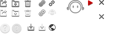

<div class="m-player">
    <div class="lock">
        <div class="left"><i></i></div>
    </div>
    <!-- 横条移到上面下面的显示 -->
    <div class="hand"></div>
    <!-- 下面的播放器 -->
    <div class="container">
        <div class="wrap">
            <!-- 左边的三个按钮组 -->
            <div class="btns">
                <i class="prev"></i>
                <i class="toggle"></i>
                <i class="next"></i>
            </div>
            <!-- 图片 -->
            <div class="head">
                
                <i class="mask"></i>
            </div>
            <!-- 歌曲说明 -->
            <div class="play">
                <div class="words clearfix hide">
                    <p class="ellipsis margin-bottom-none">歌名</p>
                    <ul class="songs clearfix margin-bottom-none">
                        <li>
                            <a>歌手1</a>
                        </li>
                        <li>
                            <a>歌手2</a>
                        </li>
                    </ul>
                </div>
                <!-- 进度条 -->
                <div class="bar">
                    <div class="slider-wrap">
                        <app-wy-slider></app-wy-slider>
                    </div>
                    <!-- 歌曲时间 -->
                    <span class="time">
                        <em>03:10</em>/ 04:20
                    </span>
                </div>
            </div>
            <!-- 图标 -->
            <div class="oper">
                <i class="like" title="收藏"></i>
                <i class="share" title="分享"></i>
            </div>
            <div class="ctrl">
                <i class="volume" title="音量"></i>
                <i class="loop" title="循环"></i>
                <p class="open">
                    <span></span>
                </p>
            </div>
        </div>
    </div>
</div>
